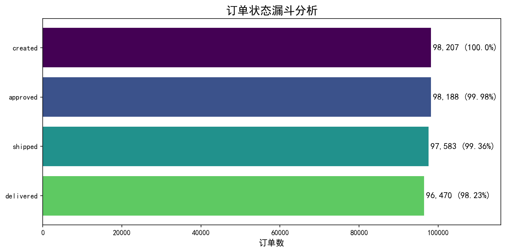
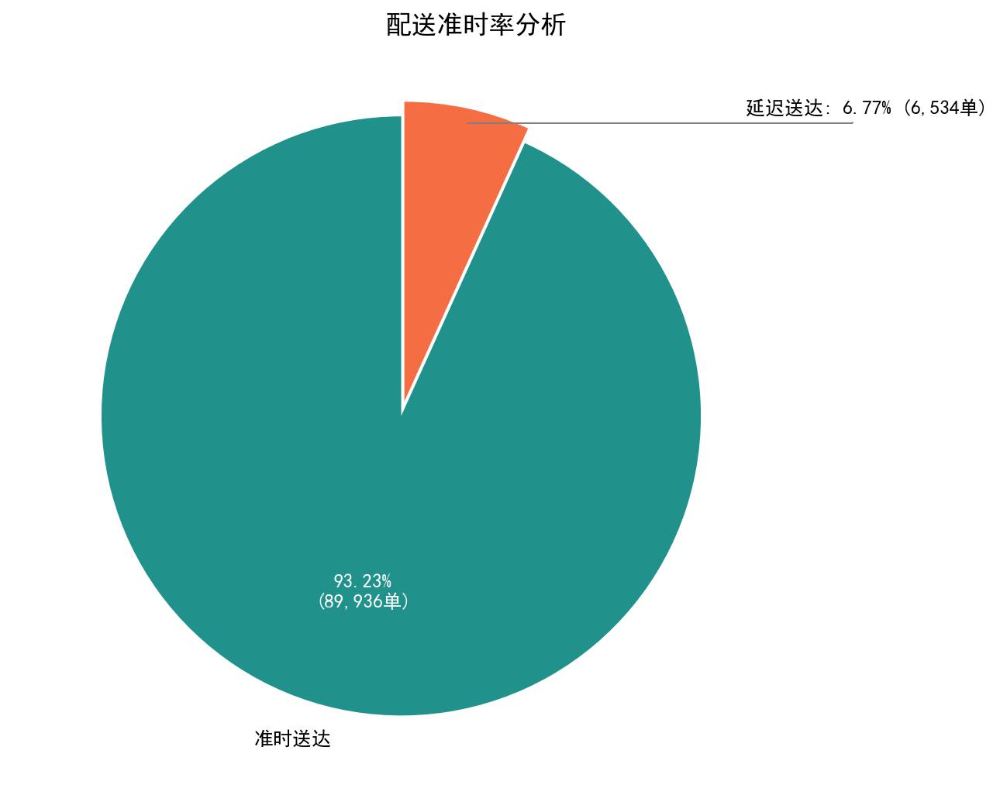
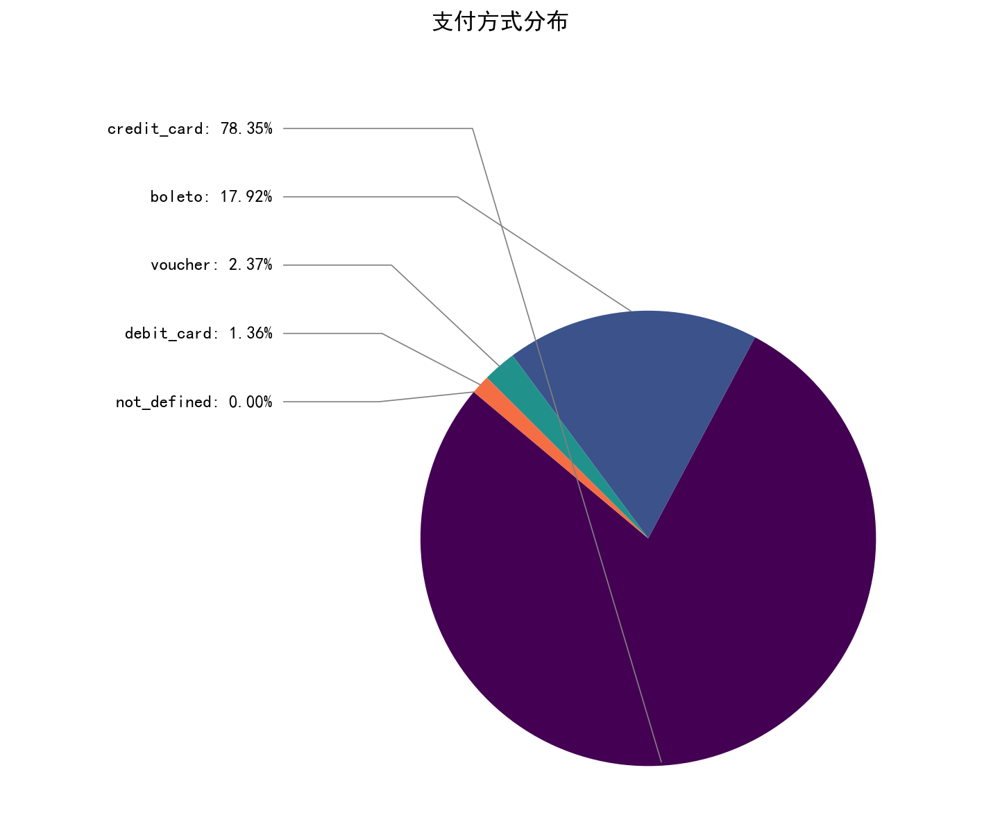
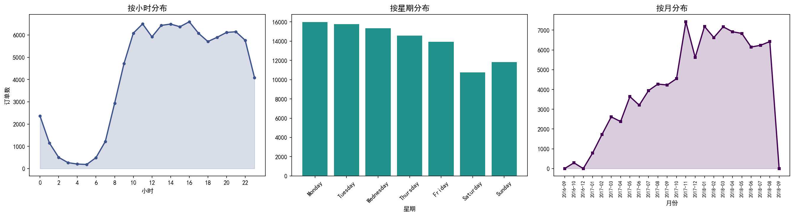
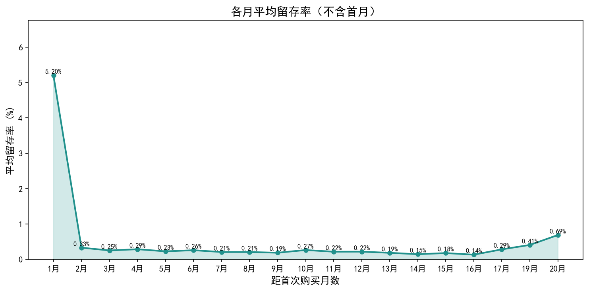
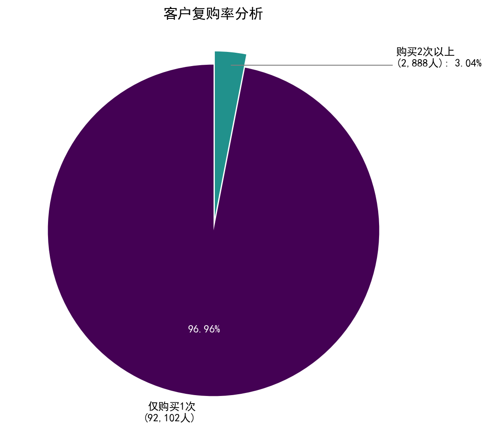
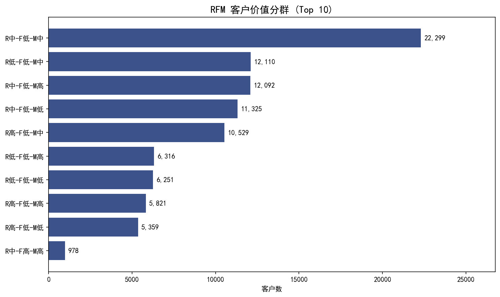
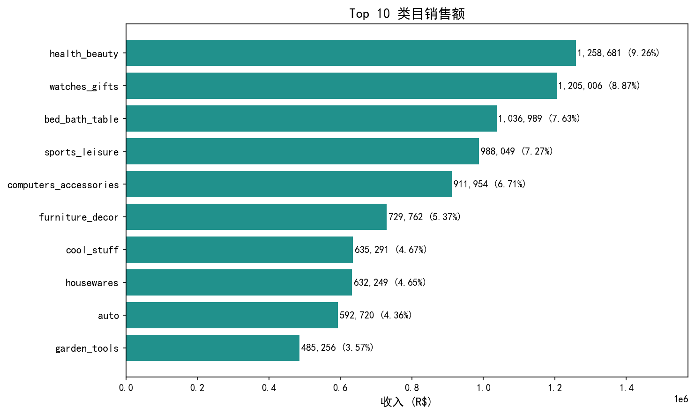

Olist 巴西电商数据分析报告
基于 Olist 平台 9.9 万条订单数据，从漏斗转化、配送绩效、支付行为、购买时间、留存复购、客户价值（RFM）、类目销售七个维度展开分析，揭示平台高效转化但复购率极低的运营特征，为库存、营销和客户运营提供数据支撑。
项目概览
本项目使用 Olist Brazilian E-Commerce Public Dataset，该数据集来自 Kaggle，涵盖 2016 年 9 月至 2018 年 9 月巴西电商平台 Olist 的真实交易记录。数据集包含 9 张表：客户、订单、订单商品、支付、评价、产品、卖家、地理位置和类目翻译表。
分析流程：数据加载与清洗 → 主表构建 → 漏斗/配送/支付/时间分析 → 同期群留存与复购 → RFM 客户价值分层 → 类目销售分析 → 可视化与结论。技术栈为 Python + pandas + matplotlib + pyecharts。
1. 订单转化漏斗分析
从订单创建到最终送达，追踪四个关键阶段的转化情况：创建 → 批准 → 发货 → 送达。

分析结论
- 98,207 条正常订单中，99.98% 通过审批，99.36% 成功发货，98.23% 最终送达
- 整体转化率很高，从创建到送达仅流失 1.77%
- 审批环节几乎无流失（仅 19 条未审批），发货环节流失稍多（624 条未发货）
- 送达环节流失最大（1,113 条已发货未送达），可能是仍在途中的订单
2. 配送绩效分析
分析已送达订单的准时率、延迟情况及配送时间分布。

分析结论
- 96,470 条已送达订单中，93.23% 准时送达，仅 6.77% 延迟
- 平均配送时间 12.1 天，平台预估日期较保守，平均提前 11.9 天送达
- 配送效率很高，延迟率控制在 7% 以内，用户体验良好
3. 支付方式分析
从支付金额占比维度分析各支付方式的市场份额。

分析结论
- 信用卡占绝对主导地位，贡献 78.34% 的支付金额
- Boleto（巴西银行汇票）占 17.92%，是第二大支付方式
- 代金券和借记卡占比极低（2.37% 和 1.36%），not_defined 可忽略
- 信用卡+Boleto 合计占 96%，建议优先保障这两种支付渠道的稳定性
4. 购买时间模式分析
从小时、星期、月度三个维度分析订单的分布规律。

分析结论
- 按小时：10-22 点为高峰时段，11-16 点最活跃，凌晨 3-5 点最低
- 按星期：周一到周三订单最多，周末明显下降（周六最低）
- 按月：2017 年 11 月订单量最高（7,423 单），可能与促销活动有关；整体呈增长趋势，2018 年保持稳定
5. 客户留存分析
按客户首次购买月份分组，追踪各同期群的月度留存率。

分析结论
- 第 1 个月平均留存率 5.20%，即新客户次月回访概率约 5%
- 第 2 个月骤降至 0.33%，之后各月维持在 0.1%-0.5% 之间
- 第 10 个月之后留存率趋近于 0，几乎无客户长期复购
- 整体呈快速衰减趋势，95% 以上的客户首次购买后不再回访
- 平台增长高度依赖拉新获客，而非老客户复购
- 建议：优化首次购买体验，通过优惠券或会员体系提升次月留存率
6. 客户复购率分析
统计所有客户中购买 2 次以上的客户占比。

分析结论
- 94,990 个客户中，仅 2,888 个客户购买 2 次以上
- 复购率仅 3.04%，近 97% 客户为一次性消费
- 电商平台复购率普遍偏低，与留存分析结论一致
- 建议：针对 2,888 个复购客户做精准营销，提升客户终身价值
7. RFM 客户价值分层
基于 Recency（近因）、Frequency（频率）、Monetary（消费金额）三个维度对客户进行价值分层，R 分 3 档、F 分 2 档、M 分 3 档，共 18 种组合。

分析结论
- 18 种 RFM 组合中，"中-低-中"（近半年购买、仅买 1 次、中等消费）客户最多（22,299 人），占 23.5%
- "低-低-中"（超过半年未买、仅买 1 次、中等消费）和"中-低-高"紧随其后，分别为 12,110 人和 12,092 人
- "高-低-高"（近期购买、仅买 1 次、高消费）有 5,821 人，是高价值新客，需重点维护
- F=高（复购客户）仅占 3.04%，与复购率分析结果一致
- 客户群体以一次性、中等消费为主，缺乏忠诚度高的高频客户
- 建议：针对"高-低-高"客户推送个性化推荐，提升复购率；对"低-低-中"客户做召回营销
8. 类目销售分析
统计 Top 10 商品类目的销售额与收入占比。

分析结论
- health_beauty（健康美容）以 R$1,258,681 占据 9.26% 收入份额，是第一大类目
- watches_gifts（手表礼品）和 bed_bath_table（床浴桌）紧随其后，分别占 8.87% 和 7.63%
- 前 5 大类目合计贡献约 39.74% 的收入，头部效应明显但长尾类目同样分散
- sports_leisure 和 computers_accessories 也表现强劲，分别占 7.27% 和 6.71%
- 建议：加大 top 5 类目的库存和推广投入，长尾类目保持基础运营即可
关键发现
业务建议
运营优化方向
- 库存与品类：加大 health_beauty、watches_gifts、bed_bath_table 等 Top 5 类目的库存投入，长尾类目保持基础运营
- 支付保障：优先保障信用卡和 Boleto 支付渠道的稳定性，这两种方式覆盖 96% 的交易
- 营销节奏：工作日 10-22 点为高峰时段，广告投放集中在此时段；11 月为旺季，需提前备货
- 客户运营：针对"高-低-高"高价值新客（5,821 人）做个性化推荐；对"低-低-中"沉睡客户（12,110 人）做召回营销
- 留存提升：通过优惠券、会员体系提升次月留存率，重点维护 2,888 个复购客户的忠诚度